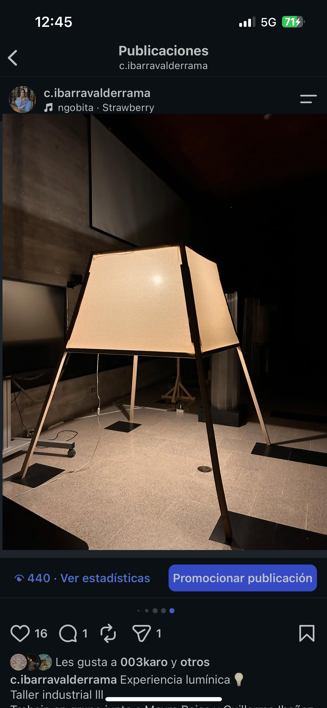
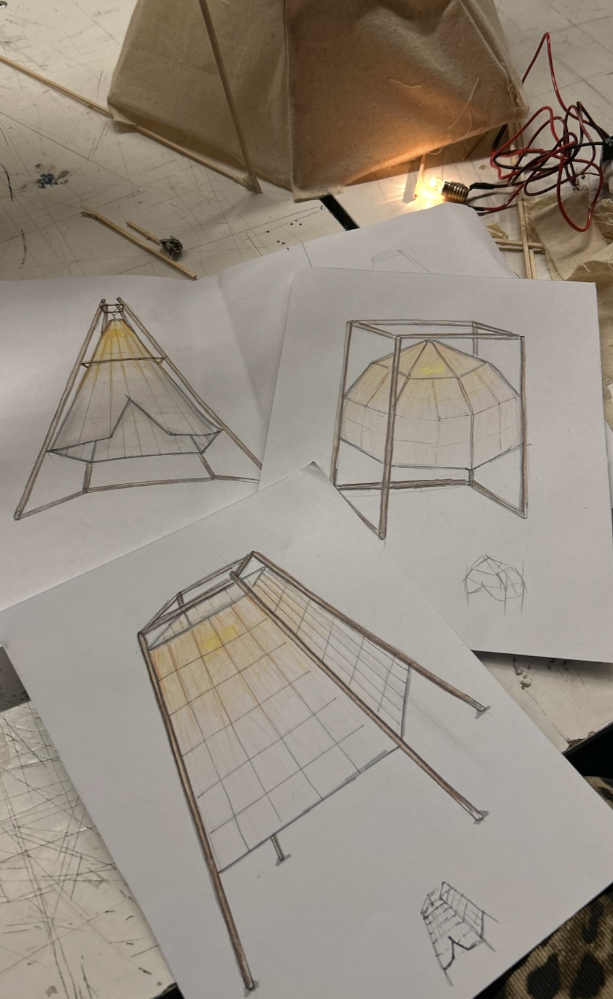
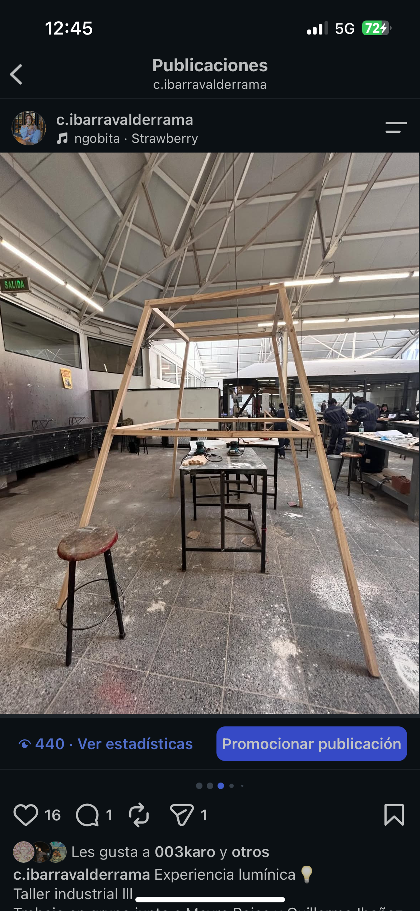
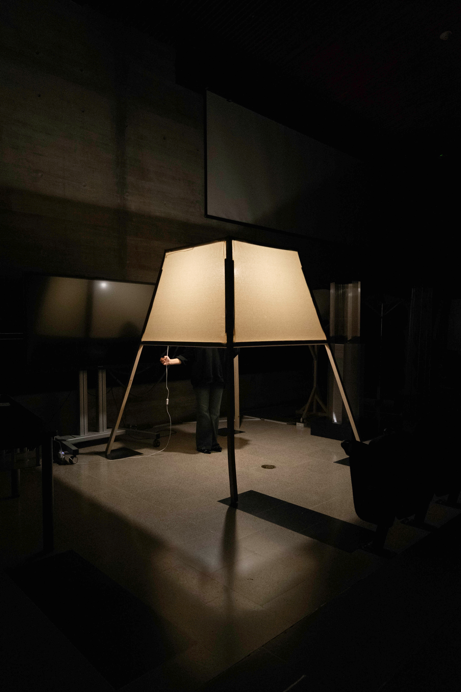
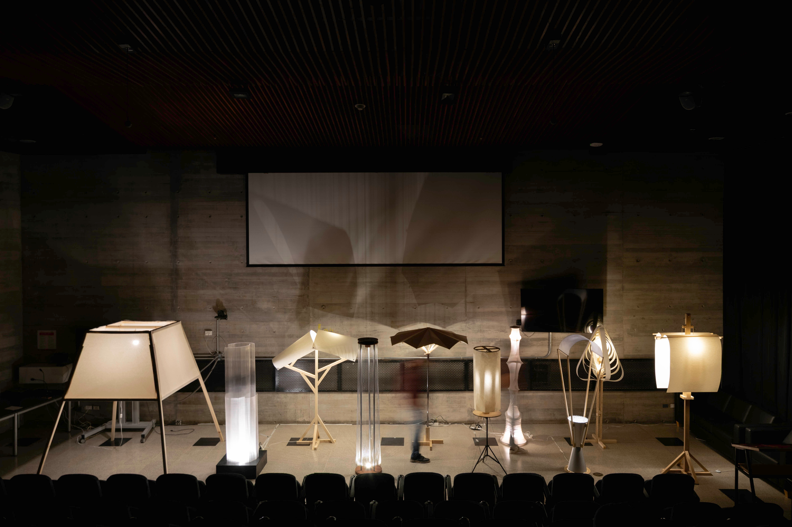

Experiencia lumínica

Lámpara de madera y tela crea
Realizada en Taller industrial II.




Trabajo en equipo realizado junto a
Mayra Rojas y Guillermo Ibáñez

Lámpara de madera y tela crea
Realizada en Taller industrial II.




Trabajo en equipo realizado junto a
Mayra Rojas y Guillermo Ibáñez